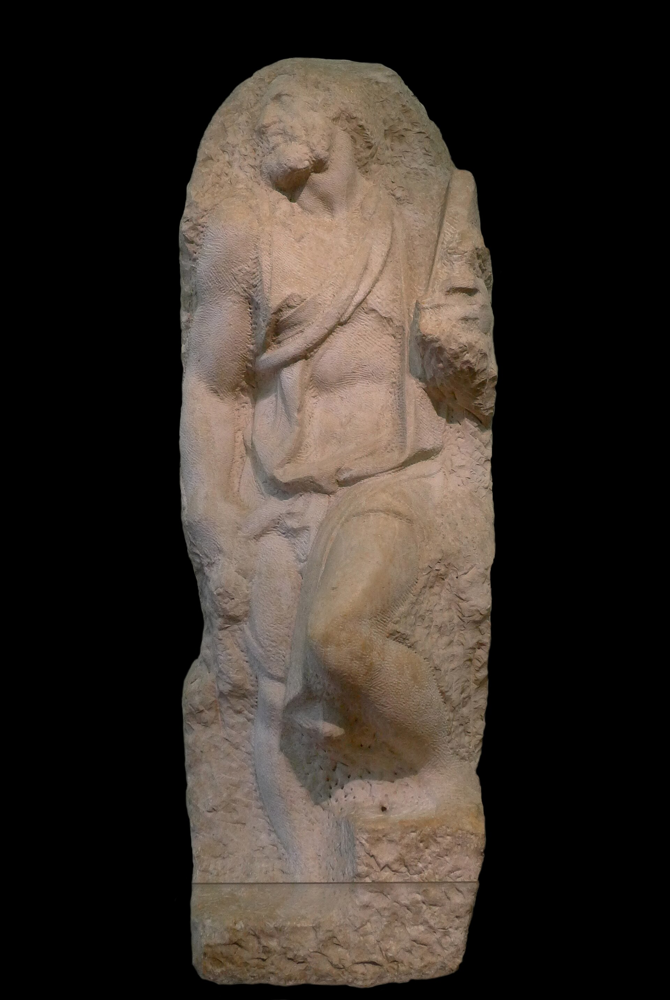
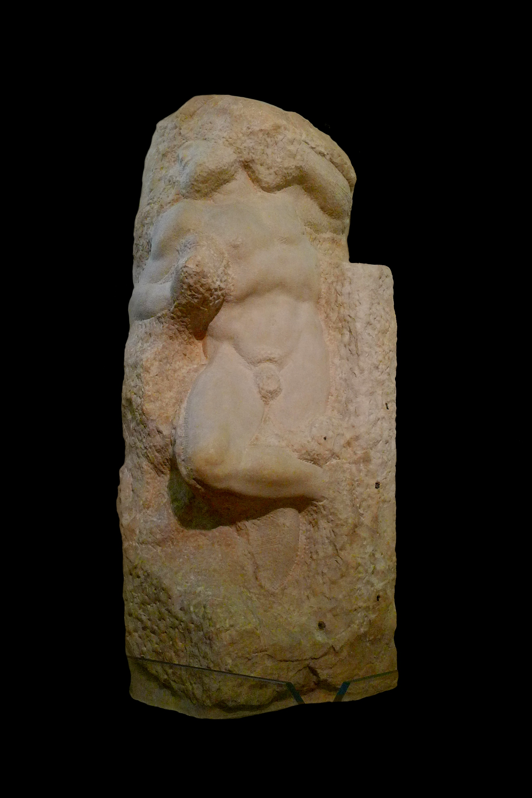
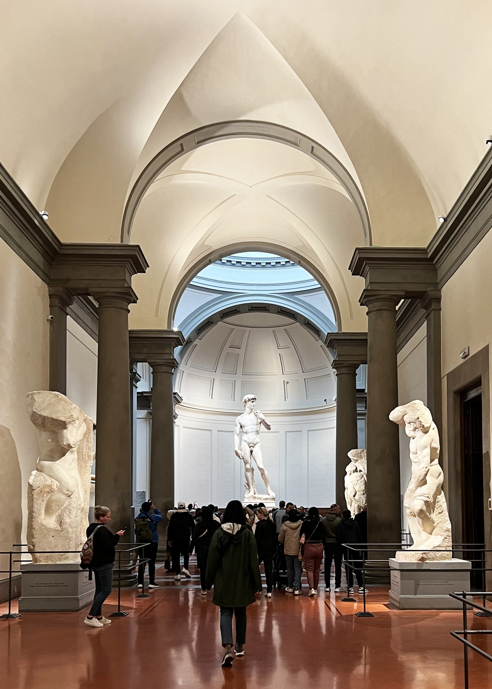
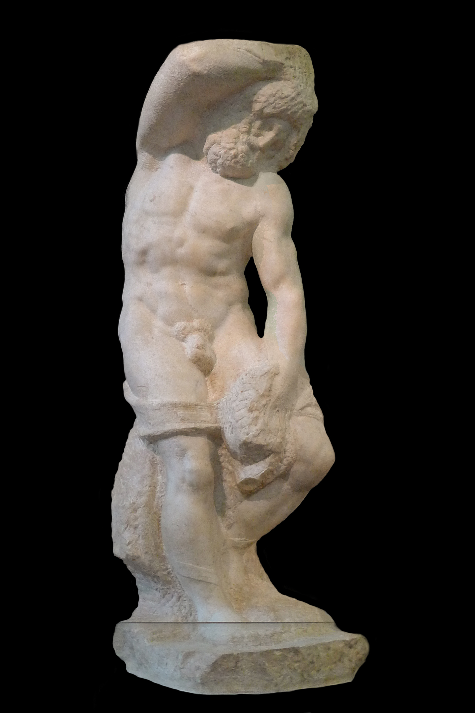
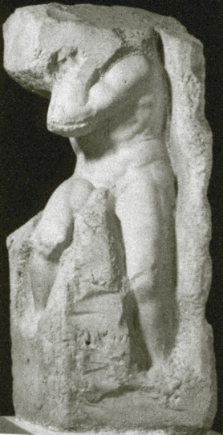
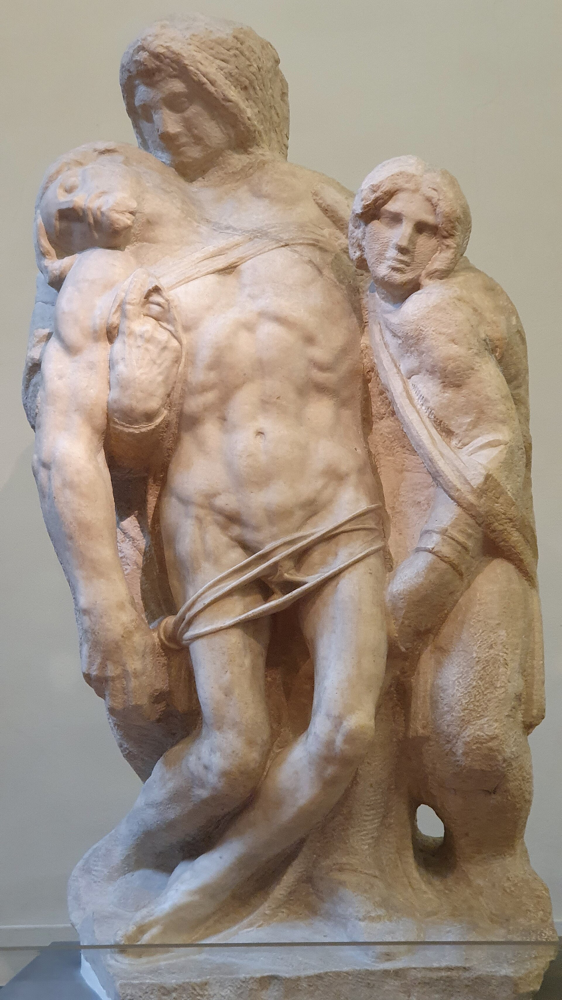
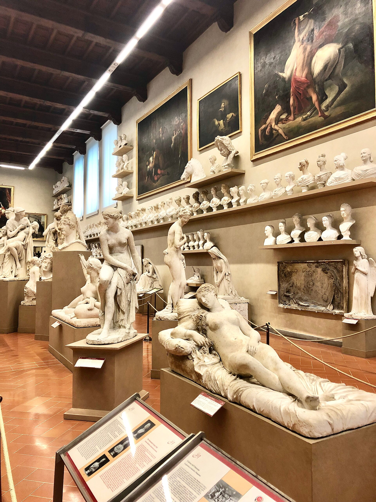
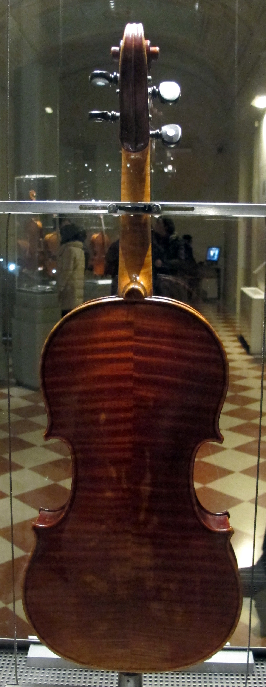
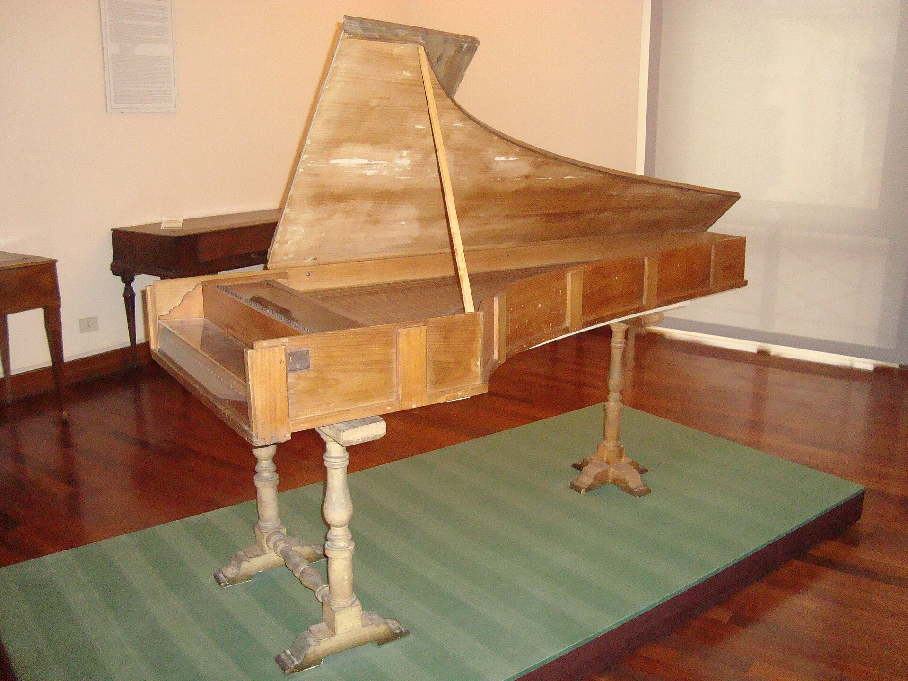

1784 年成立的美院附属美术馆，因为 1873 年《大卫》迁入而成为世界级朝圣地。除了 5.17 米的大卫真迹，馆内还有米开朗基罗四尊《囚徒》与哥特式金底祭坛画专区--多数人 90 分钟走完，但大卫值得你在穹顶下站满 20 分钟。
看点路线
Il Percorso
- 1主厅尽头的大卫：正面看神情，两侧看肌肉，背后看扭转--绕行一周
- 2入场长廊两侧：四尊《囚徒》--米开朗基罗的“未完成美学”
- 3右侧专厅：哥特金底祭坛画（乔托学派），文艺复兴前夜的佛罗伦萨
- 4乐器厅：斯特拉迪瓦里与钢琴发明者克里斯托福里的原作
馆藏名作
Galleria dell'Accademia
雕塑Scultura · 10 件

《大卫》
5.17 米、约 6 吨，整块卡拉拉大理石。他不是胜利后的松弛，而是投石前的瞬间：眉头紧锁、颈部血管绷起、右手攥石。米开朗基罗选了故事里最紧张的一秒。

《圣马太》
为佛罗伦萨大教堂订制的使徒像，因大卫的成功被搁置。腿部已完成、上身仍裹在毛坯里--圣徒仿佛正在挣脱石头出生，罗丹称之为“最伟大的未完成”。

《囚徒·觉醒》
上身已经挣出石块、腿仍被锁在毛坯中的奴隶。未完成的动态恰成了主题本身：挣脱，即雕刻。

《囚徒·年轻奴隶》
为教皇尤利乌斯二世陵墓雕的六尊奴隶之一。扭曲的躯干与粗糙的凿痕并存--米开朗基罗的“半成品”比多数人的完成品更完整。

《囚徒·胡须奴隶》
蓄须的奴隶几乎完全成形，只差最后的抛光。脸部的忍耐与肩背的用力，是“石头里的人”系列里最接近自由的一个。

《囚徒·阿特拉斯》
弯腰背负无名重物的奴隶--像神话里扛天的阿特拉斯。头部与背部从未从毛坯中分离：他要扛起的东西，就是他自己。

《帕莱斯特里纳圣殇》
归属争论不休的一组浮雕：基督的身体从窄小石面上挤压而出。看惯了罗马《圣殇》的圆熟，这组“压缩构图”更显晚年对空间的执念。

巴托利尼石膏像馆
一整条廊道排满 19 世纪学院教学的石膏模型：从《拉奥孔》到《贝尔维德雷躯干》--未来雕塑家的“临摹教室”，原样冻结。
詹博洛尼亚《强夺萨宾妇女》石膏模型
领主广场那尊螺旋杰作的“出厂模型”。对着模型看原作的位置关系，你会理解詹博洛尼亚是怎么把三具身体拧成一条上升的琴弦。
一楼古代雕塑陈列
学院收藏的罗马时代雕像与浮雕，是文艺复兴学院派教学的“古代范本”--大卫厅之外，这里最安静。
绘画与学院收藏Pittura e Collezioni · 10 件
《受胎告知》
国际哥特式晚期的报喜图：金色背景与粉色长袍的极致优雅。莫纳科死前一年完成--佛罗伦萨画派“青春前夜”的最后光泽。
《夸拉泰西祭坛画》
国际哥特式大师为佛罗伦萨家族所作的祭坛画残组：金色光辉中的东方三王。它是马萨乔革命前“旧世界”的最后高峰。
金底圣像群
整面展墙的金底蛋彩：拜占庭式圣容在佛罗伦萨的余晖。50 米外就是大卫--策展人故意让你先看“平面”，再看体积革命的成果。
十四世纪祭坛画组
乔托弟子们的祭坛画群：叙事场面开始出现真实的光线与表情--文艺复兴的种子，在老师的阴影里发芽。

斯特拉迪瓦里「美第奇」小提琴
现存最完好的斯特拉迪瓦里之一，琴身涂漆仍是出厂状态--因为太完美，两百年没人舍得拉。托斯卡纳大公的订制品。

克里斯托福里早期钢琴
现代钢琴的直系祖先--克里斯托福里在美第奇宫廷发明了“能轻能响的羽管键琴”。钢琴诞生在佛罗伦萨，这段冷知识值得讲一辈子。
羽管键琴与古钢琴群
学院乐器厅的键盘家族：描金琴盖、大理石纹漆面--乐器在当年既是家具也是炫技画布。
俄罗斯圣像收藏
美第奇-洛林大公时代入藏的一批俄语世界圣像--东西方教会在佛罗伦萨一间展厅里打了个照面。
学院教学档案与素描
1784 年起美术学院的学生作业、人体素描与竞赛作品--“学院派”这个词，就是从这类抽屉里诞生的。
十九世纪学院派雕塑与新哥特复兴
意大利统一前后的大理石胸像与“意大利”拟人像--从新古典的冷到浪漫主义的褶皱，一展厅看完 19 世纪。
历史故事
Le Storie
壹一块闲置了 25 年的大理石
1464 年，雕塑家阿戈斯蒂诺·迪·杜乔受托从卡拉拉采回一块巨型大理石，为圣母百花大教堂雕先知像。他凿了几下，判断失误，就把石头扔在工棚里风吹雨打 25 年。
1501 年，26 岁的米开朗基罗接手这块“废料”。关于他的方法，后世流传一句名言（他本人也讲过类似的话）：雕塑本已存在于石头中，我只是把多余的部分去掉。
大卫落成时太重无法吊上大教堂檐口，市政府开委员会选址--年轻的达芬奇也在委员名单上，他建议放在旧宫凉廊的角落“低调些”。最后大卫立于旧宫门口，一守 369 年。
贰搬家的那四天
1873 年，风吹日蚀了三个世纪的大卫终于被搬进室内。工程持续四天：木塔包裹、轨道滑行、全程夜间运输--即便如此，一路仍有人朝它扔石头（记录在案的至少两起）。
1910 年，大理石复制品在旧宫门口归位，游客至今分不清真假--但要看真迹的呼吸感（颈部血管、因紧张而胀大的右手），必须来学院美术馆的穹顶下。
1991 年有人砸损了大卫的脚趾，此后大卫被玻璃墙环护。站在他的目光尽头往南看--米开朗基罗让他怒视的方向，正是罗马。
叁圣马太：停在一半的使徒
《圣马太》是米开朗基罗为佛罗伦萨大教堂订的十二使徒之一，1504-1505 年动工后因大卫的成功被搁置--此后再未回来完成。
腿部已凿完、上身仍裹在毛坯里，使徒仿佛正从石头里出生。罗丹看到后说：这是“最伟大的未完成”--未完成本身成了主题。
它在大卫厅的侧廊，多数人直奔大卫而错过。绕过去站两分钟：这里安静得能听见石头。
肆四尊囚徒的“挣扎史”
六尊《囚徒》为教皇尤利乌斯二世的陵墓而雕：两尊完成度较高的（反抗的、垂死的）1513? 年就被送到巴黎--今天在卢浮宫。
留在佛罗伦萨的四尊（年轻、胡须、觉醒、阿特拉斯）在 1520 年代中期停工，1560 年代被米开朗基罗的侄子送给美第奇大公，先装饰波波里花园的洞窟，1908 年移入学院美术馆。
四个人、四种挣脱的程度--美术史家把它们当作米开朗基罗“非完成美学”的完整光谱。
伍美术学院的诞生
1784 年，托斯卡纳大公皮特罗·利奥波德改组美术学院，规定所有学画者必须临摹古代石膏与大师原作--大卫 1873 年迁入，正是这个“教材化”逻辑的延伸。
馆内的巴托利尼石膏廊保存着 19 世纪教学的全部“教材”：从《拉奥孔》到《观景楼躯干》的石膏翻模，一排排立在原位。
在石膏廊走一圈你会明白：佛罗伦萨的每一代雕塑家，都是从同一套“古代副本”里毕业的。
陆乐器厅：钢琴诞生在佛罗伦萨
1700 年前后，美第奇宫廷的乐器保管人巴尔托洛梅奥·克里斯托福里发明了“能轻能响的羽管键琴”--gravicembalo col piano e forte，钢琴因此得名。
馆里陈列着 1720 年代的克里斯托福里早期钢琴（存世仅三件）与斯特拉迪瓦里 1716 年的“美第奇”小提琴--后者因太完美，两百年没人舍得拉。
下一站去米兰斯卡拉时记得这个伏笔：意大利不只是视觉艺术的国家，它还承包了你耳朵里的机械史。
柒利佩修士的《天使报喜》
学院美术馆的绘画区最亮眼的一件，是洛伦佐·莫纳科（Lorenzo Monaco，绰号“修士”）的《天使报喜》：国际哥特式晚期的优雅巅峰，金色背景与粉紫长袍至今鲜艳。
他 1424? 年去世前完成此画--马萨乔的透视革命就在同城的另一面墙上发生。一个时代的落幕与另一个时代的开幕，在这座城市里几乎同月。
看画时留意加百列的翅膀：还是中世纪的“装饰性羽毛”--再过二十年，天使的翅膀将开始“解剖学化”。
捌俄罗斯的圣像到了佛罗伦萨
学院美术馆有一批 15-17 世纪的俄罗斯圣像--美第奇-洛林大公时代的东方收藏，长期少人问津。
拜占庭的金色背景在佛罗伦萨的展墙上与乔托学派金底画隔厅相望：同一口“金色井”里，东西方教会各自打水。
逛完大卫厅后的这条冷门支线，是全馆最安静的十分钟。
玖大卫的“眼睛”
大卫的双眼各藏一个心形的凿刻痕迹--不是瞳孔，而是米开朗基罗为强化“凝视”而留的阴影眼窝。从正面看炯炯，从侧面看空茫。
他的头与右手都做了“放大修正”：因为原设计放在高处仰视，比例必须为视角让路--文艺复兴的“观者中心主义”刻在解剖里。
绕场一周的三个必看：正面的皱眉、右侧绷起的静脉、背部的扭转。每一面都是不同的心理剧。
拾排队经济学
学院美术馆是全意大利“预约差价”最狠的场馆之一：官网票 €16+€4 预约费，门口“免排队团”€50-80--差额买的其实是那 90 分钟的从容。
8:15 首场 + 预约 = 与大卫独处的黄金 30 分钟；下午 16:00 后旅行团撤退，是第二选择。
馆不大、动线单一（长廊-大卫厅-侧翼），90 分钟是舒适值。把它排在乌菲兹之前看--先看“一件的极致”，再看“一个时代的全景”。
参观贴士
Consigli Pratici
- 开馆 8:15 首场 + 预约票 = 与大卫独处的黄金 30 分钟
- 馆内可拍照（禁闪光）；大卫正面光线上午最好
- 周一闭馆，与乌菲兹同步--排行程时把“双馆日”留给周二至周日
- 旺季预约票依然要排 10-20 分钟安检；门口“免排队团”溢价严重，官网自购即可
- 附近美食打卡：中央市场 Mercato Centrale 步行 6 分钟，看完大卫去吃牛排套餐正合适
顺路同游
Da Non Perdere